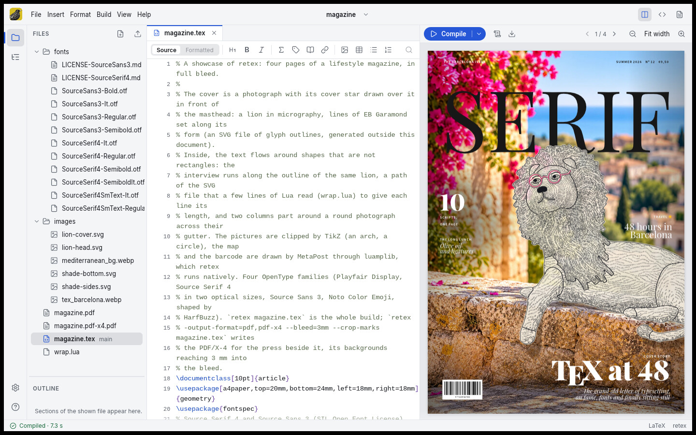

TeXCraft User Guide
TeXCraft is a LaTeX editor that shows the PDF as you type. Your project's files are on the left, the source in the middle and the PDF on the right; a build starts by itself when you pause.

magazine sample).TeXCraft typesets with retex, a TeX engine written in Rust that runs inside the app. You do not need to install a TeX distribution: a package your document needs is fetched when it is first used. retex also brings a few things a LaTeX setup usually needs extra programs for: SVG, WebP, JPEG XL, GIF and TIFF images in \includegraphics, BibTeX, biber and makeindex built in, and code listings with minted without Python.
TeXCraft is early software. It works for everyday writing, but expect rough edges, and keep your projects under version control (TeXCraft does that for you: every project is a git repository, see History).
The desktop app and the browser version
TeXCraft is one program with two homes. Most of this guide applies to both; where a feature works in only one, the guide says so with a label: Desktop only or Browser only.
| Desktop (Linux, Windows, macOS) | Browser | |
|---|---|---|
| Projects | Folders on your disk | Kept in your browser, by name |
| History | A git repository in the folder | Versions kept in the browser |
| TeX packages | Your TeX Live, or downloaded as needed | The site's own set of common packages; others are not available yet |
| Formulas in the formatted view | Typeset | Shown as their source |
| AI assistance | Yes, once you connect a model | Not yet |
| GitLab and GitHub | Sign in to both; push and pull folders | Sign in to GitLab; a token for GitHub; no push and pull of folders |
| PDF in its own window | Yes | No |
| Saving files | Where you choose | As downloads |
Getting TeXCraft
- In the browser
- Open texcraft-893d51.gitlab.io. Nothing to install; the engine runs in the page and your projects stay in your browser. The first build of a visit downloads the TeX files it needs; later builds take a moment.
- Linux
- An AppImage and a Flatpak bundle (x86_64) are on the releases page.
- AppImage: make it executable and run it:
chmod +x TeXCraft-*.AppImage, then./TeXCraft-*.AppImage. It needs glibc 2.36 or newer (Debian 12, Ubuntu 24.04, Fedora 37 and later) and FUSE 3; without FUSE, run it with--appimage-extract-and-run. - Flatpak:
flatpak install --user TeXCraft-*.flatpak, then start TeXCraft from your applications menu or withflatpak run io.gitlab.severin_lemaignan.TeXCraft. The Flatpak does not see a TeX Live installed on your system: it keeps its own, downloaded as documents need it, so its first build needs the network.
- AppImage: make it executable and run it:
- Windows and macOS Experimental
- A zip for Windows (x86_64) and an app for macOS (Apple Silicon) are attached to the releases on the GitHub mirror. They are not signed: on Windows, the first start asks before running it (More info › Run anyway); on macOS, open it the first time with a right-click and Open. They have had little testing, so please report what goes wrong.
- From source
- With Rust installed:
git clone https://gitlab.com/severin-lemaignan/texcraft, thencargo run --release -p texcraftin the folder. See the README.
In this guide
- Getting started
Your first project, templates, and a tour of the window.
- Writing
The source editor, the formatted view, tables, symbols, spelling, search, Vim mode.
- Building and exporting
Compiling, the build log, jumping between source and PDF, export formats.
- Projects, files and history
Folders, importing files and zips, versions and restoring them.
- GitLab and GitHub
Open, commit, update, push and pull, merge requests.
- Comments and suggestions
Discuss passages and propose changes to accept or reject.
- AI assistance
Connect a model of your choice; what is sent, and when.
- Keyboard and accessibility
Every shortcut, moving between regions, screen readers.
- Settings
Each tab of the Settings dialog.
- Agents and automation
The MCP server and the control channel.
- Troubleshooting
Build errors, missing packages, where files are kept.
How this guide writes things
- Menu entries and buttons are written as the interface shows them, a path with ›: File › Save Project As….
- Shortcuts are written for Linux and Windows: Ctrl+S. On macOS, Ctrl is Cmd and Alt is Option. Every shortcut can be changed (how).
- The guide is in English. The interface can also be shown in German, Spanish, French, Italian, Dutch and Portuguese (Settings › Appearance); there, menu entries and buttons have their translated names.